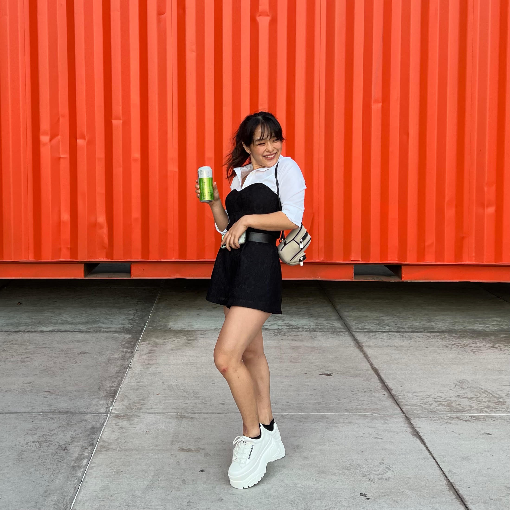
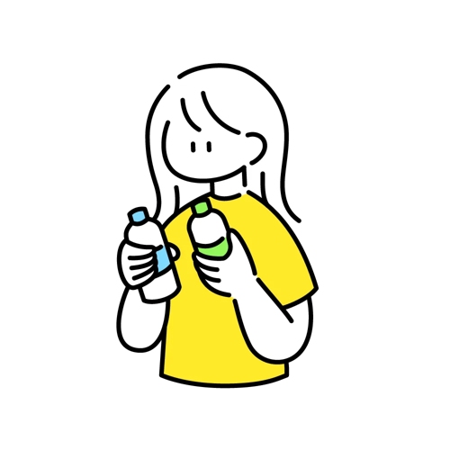
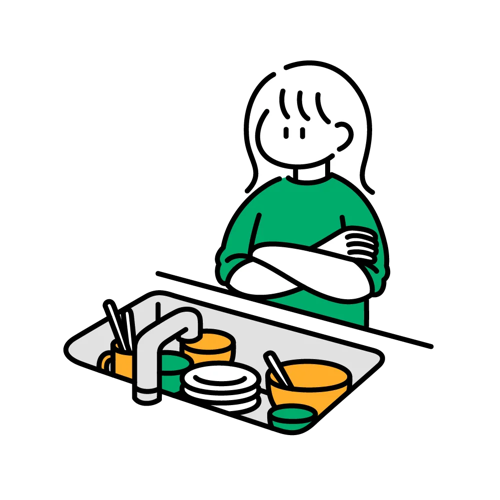
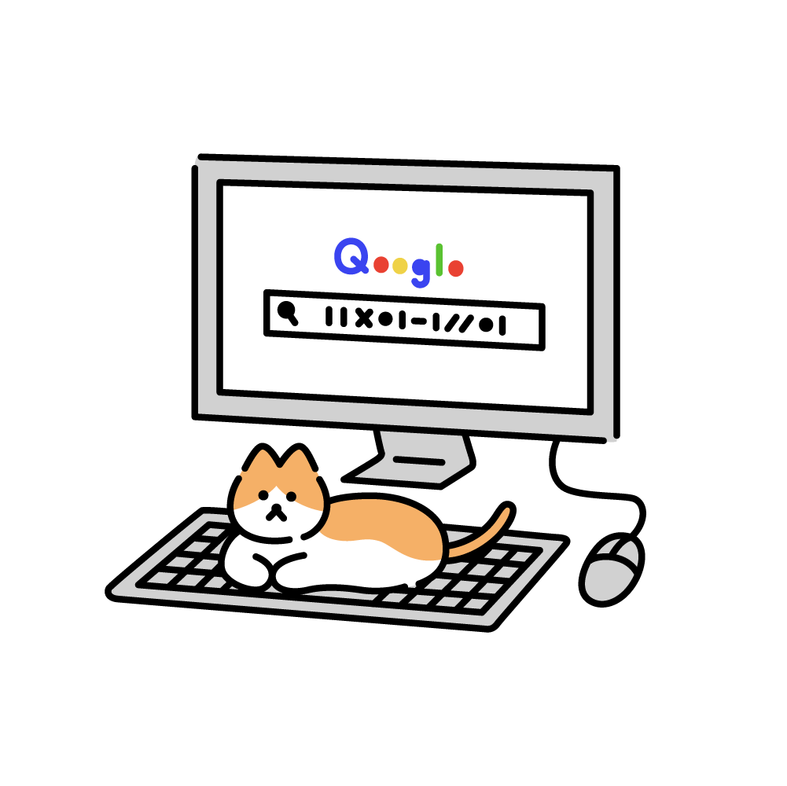
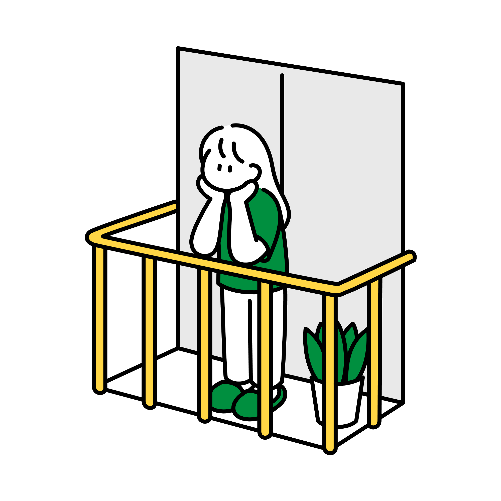
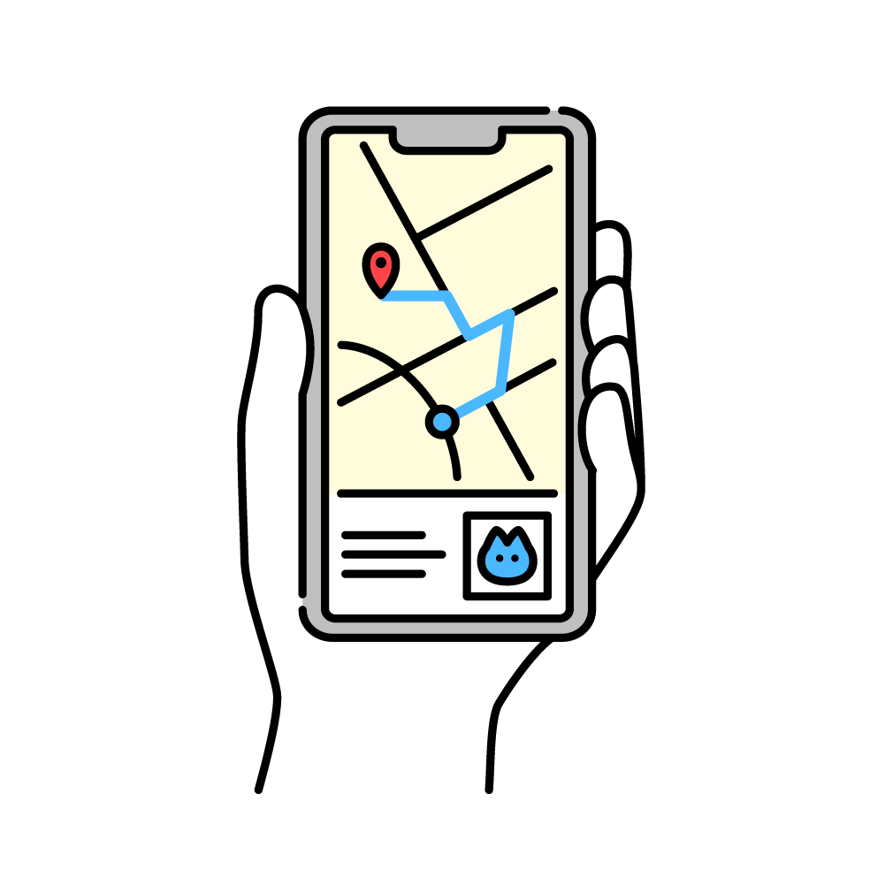

Welcome!
I’m Hirona Arai
NLP PhD candidate at USC’s INK Lab 🎨
I study how language models read between the lines.
It's pronounced [hɪ̥ˈɹoʊnə] like a stellar corona🌟
Unfortunately, the mnemonic used to be more niche
Hi! I'm Hirona.
I'm a fifth-year CS PhD candidate at USC, working on natural language processing with Professor Xiang Ren at the INK Lab :)
My research is about pragmatic interpretation in LLMs: what happens when the meaning of an utterance depends on who is speaking, why, and in what situation, rather than on the words alone. Lately that means building benchmarks for conversational implicature and studying how models interpret underspecified editing requests like “make this simpler.” I came to this through linguistics as much as computer science; I majored in both at Middlebury College. I also TA USC's NLP courses and mentor students from high school through master's level.
Away from my laptop, you'll find me road biking in the Malibu mountains (I'm vice president of USC Cycling this year) or lifting. CV here!
News
- Oct 2026 — NoHurt, a paper by two undergraduates I mentored, is under review at ARR.
- Aug 2026 — Head TA for CSCI 544 Applied NLP (300 students).
- Jul 2026 — Presented DRInQ at ACL 2026 in San Diego. Try the demo.
- 2026 — Translating the Untranslatable accepted to Findings of EMNLP 2026.

Recent Projects
Things I've worked on with some very cool people.

Can LLMs read between the lines? A benchmark for conversational implicature that holds the question fixed and varies only the context. Models that can write pragmatic scenarios often can’t interpret them.

PlaSma: making small language models better procedural-knowledge models for (counterfactual) planning, with AI2. ICLR 2024.
Can vision-language models recall factual associations from a picture alone, the way they can from a name? Findings of EMNLP 2025.
How do LLMs handle culturally specific terms that have no direct equivalent in the target language? Findings of EMNLP 2026.

Senior thesis on part-of-speech tagging for poetry, with Professor John Foley.

Two years of student tweets, classified and visualized as campus mood, after the hedonometer.
Group playlists with non-Spotify friends. Built by a team of 8 across 5 time zones in COVID fall.

How English syllables and schwa map onto Japanese mora and vowels in loanwords, with Professor Baird.
Publications
Also on Google Scholar.
- DRInQ: Evaluating Conversational Implicature with Controlled Context Variation
Hirona J. Arai and Xiang Ren
ACL 2026 · Paper · Demo · Poster - NoHurt: Context-Sensitive Benchmarking for Quantifying Information Acquiescence During High-Risk Dialogue
Julian Maynes, Nairi Zeytounzian, Hirona J. Arai, Xiang Ren
Under review, ACL Rolling Review, 2026 - Translating the Untranslatable
Jacob Bremerman, Brihi Joshi, Hirona J. Arai, Jonathan May, Xiang Ren
Findings of EMNLP 2026 · Paper - Can VLMs Recall Factual Associations From Visual References?
Dhananjay Ashok, Ashutosh Chaubey, Hirona J. Arai, Jonathan May, Jesse Thomason
Findings of EMNLP 2025 · Paper - PlaSma: Making Small Language Models Better Procedural Knowledge Models for (Counterfactual) Planning
Faeze Brahman, Chandra Bhagavatula, Valentina Pyatkin, Jena D. Hwang, Xiang Lorraine Li, Hirona J. Arai, Soumya Sanyal, Keisuke Sakaguchi, Xiang Ren, Yejin Choi
ICLR 2024 · Paper